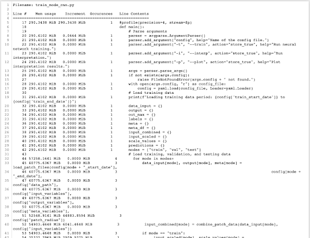

4. Memory profiling python scripts with memory_profiler¶
The memory_profiler package provides line-by-line output of how much memory is allocated for a process, cell, script, or workflow.
Installing memory_profiler is very easy.
Pip¶
pip install -U memory_profiler
Conda¶
conda config --add channels conda-forge
conda install memory_profiler
Memory_profiler isn’t just easy to install, it’s easy to implement into your scripts, jupyter notebooks, or entire workflows. Below are a few of the many ways memory_profiler can be implemented. See documentation here and here.
1. Simple decorator above any script function¶
@profile above any function like in the script (example.py) below. You can set the precision with which the memory usage is reported.
Run using the following command: python -m memory_profiler example.py and you will generate a file called memory_profiler.log containing the following output.
2. Decorators above sub-functions¶
@profile above any sub-functions (test.py) called in your main script (example.py) below.
memory_profiler.log will output the following:
3. Eliminate -m memory_profile flag by importing module into the script¶
4. Track and plot memory as a function of time¶
Import and decorate exactly as the above example. Then instead of python, run via mprof run example.py
This method of running will still lead to the familiar output we’ve seen in previous ways of using memory_profiler.
However, in addition to the line-by-line summary, the output of mprof run will be saved in a file that begins with mprofile_ and ends in .dat. To create a plot out of this output, run mprof plot --output=plot.png and the following will be created:
5. A more complicated script example output¶

6. Jupyter notebook importing module¶
When comparing or testing various functions, memory_profiler can be used by importing the module’s various methods.
from memory_profiler import memory_usage
mem_usage = memory_usage(-1, interval=.2, timeout=1)
print(mem_usage)
[45.046875, 45.046875, 45.046875, 45.046875, 45.046875]
def aaa():
a = [1] * (10 ** 6)
b = [2] * (10 ** 7)
del b
return a
mem_usage = memory_usage(aaa, interval=.2, timeout=1)
print(mem_usage)
[129.24609375, 129.2578125, 136.890625, 136.890625, 136.890625, 136.890625]
7. Jupyter notebook magic function¶
Using memory_profiler can be as easy as implementing notebok magic functions, as shown below.
%load_ext memory_profiler
%memit range(10000)
peak memory: 136.90 MiB, increment: 0.00 MiB
%memit range(10000000)
peak memory: 136.91 MiB, increment: 0.01 MiB
8. Other methods of running and customizing memory_profiler¶
The memory_profile module can be run via multi-processing and will output the memory usage of child processes. Memory_profiler can also be used to debug via a memory threshold. There are various ways of reporting the results of the memory profiling. Finally, there are various ways to customize the output and plotting of memory_profiler. For more customization and further running options, please see documentation here and here.